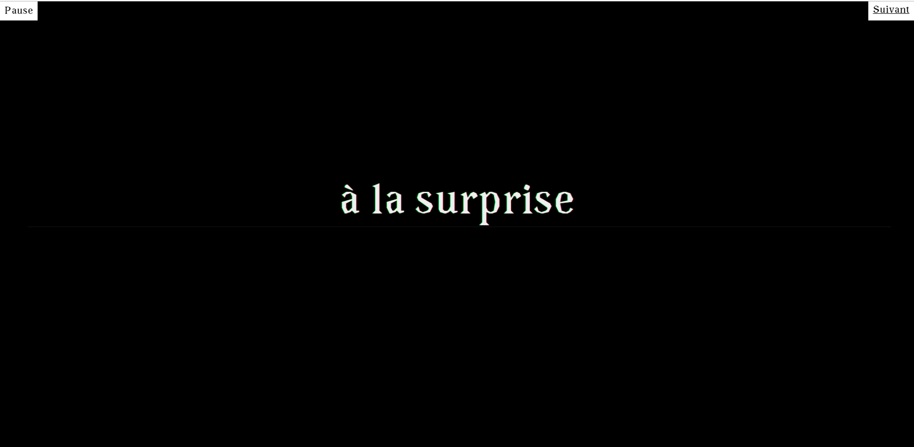
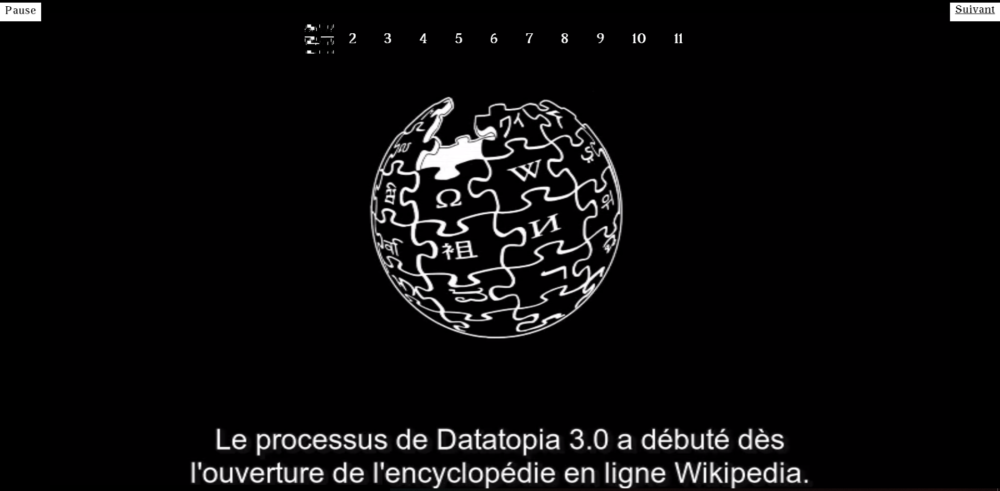
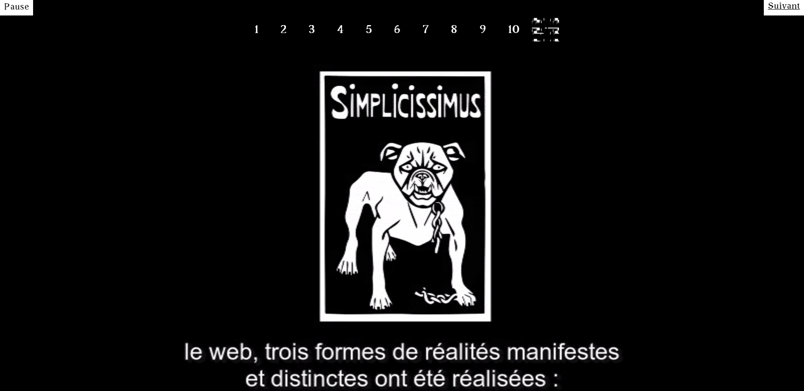
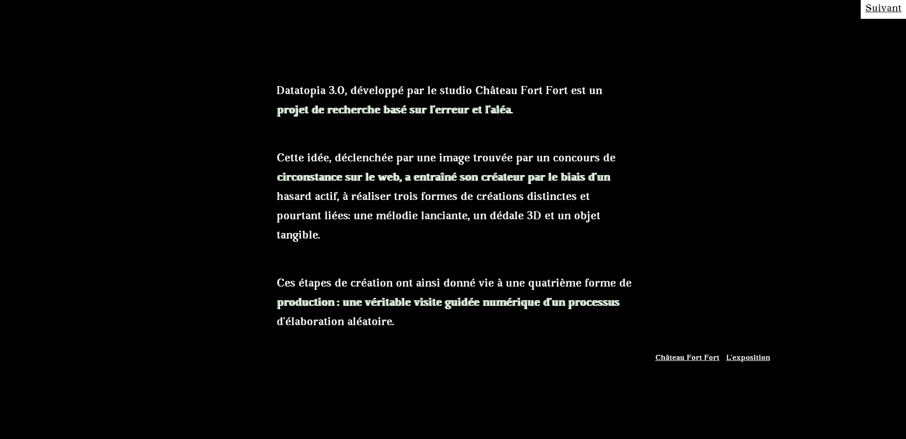
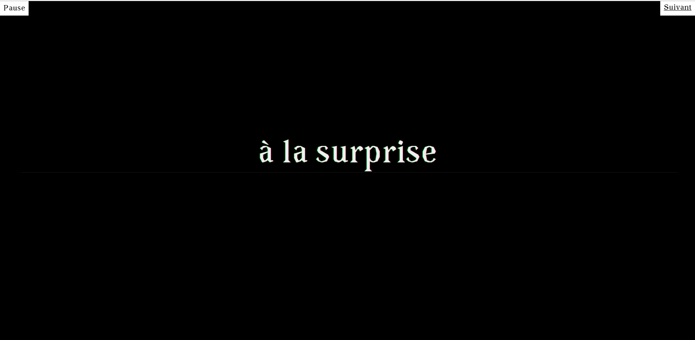
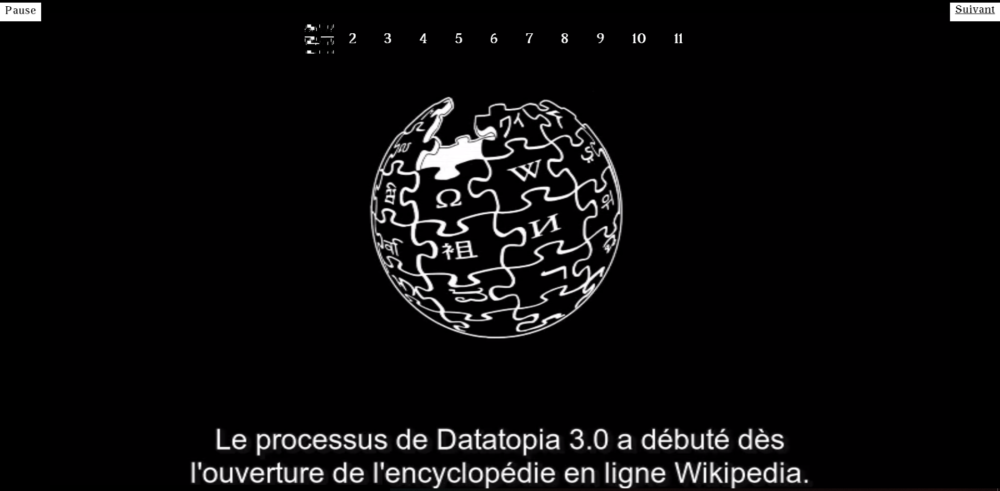
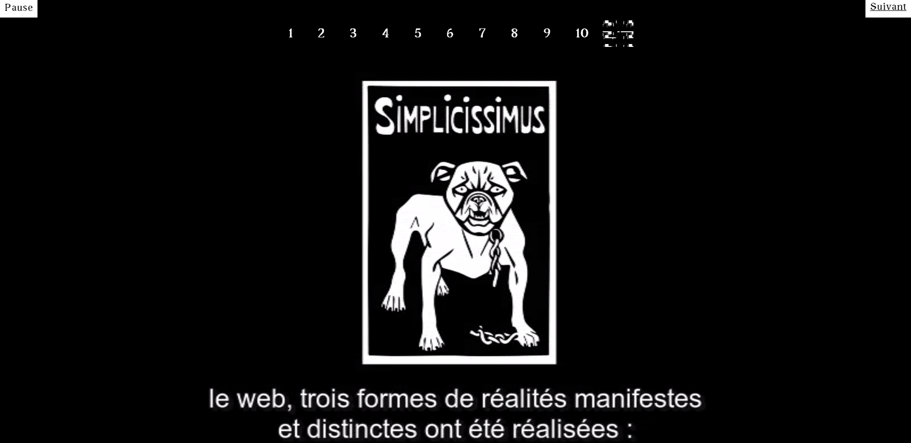
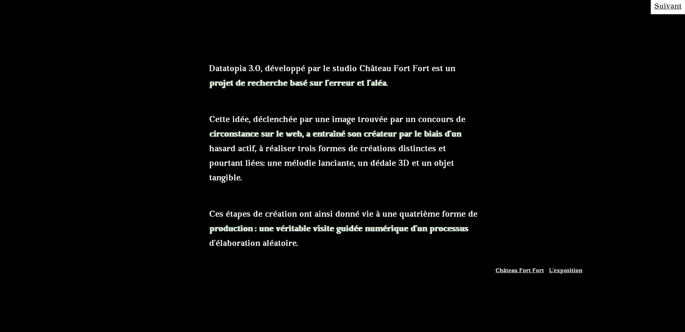

History
Datatopia 3.0 developed by Château Fort Fort agency is an art research project based on error and randomness.
The idea started by a random picture found on the web, and brought his creator to randomly realize 3 forms of creation: a nagging melody, a 3D maze and a tangible object.
Those creative steps set up a fourth form of creation: a virtual exhibition website about this project.
Typography
AvaraAvenirVideo
Showcase Datatopia video project (mp4 960*540px 3’’30)
Sound
An immersive, pronounced sound atmosphere was required.
Design
Having a radical, pronounced and original UX design.
Strategic technology watch
01. audioarchitecture.com.au 02. byobmpls.net03. pre.fonshickmann.com
04. nclud.com 05. tineguenther.com
Navigation
The website is Datatopia 3.0 virtual exposition.
Navigation is linear —like in a museum. The only option is to move forward by one step. There is no way to go back.
As a pro, this navigation tells a story and controls the narrative from start to end; the visitor can focus on the story he is told.
As a con, this navigation constrains the visitor, preventing him from creating his own path.
Sound
Like in a museum, the tour is animated by two speakers. Each one explain what Datatopia 3.0 is and how it has been accomplished.
The experience is both visual and auditive.
 






